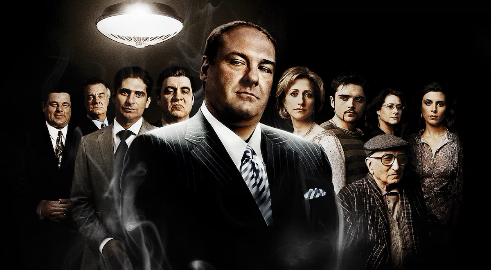

The Sopranos (1999-2007):
This HBO drama shattered television conventions with its unflinching portrayal of Tony Soprano, a New Jersey mob boss. We see Tony juggling the stress of family life, therapy sessions, and the violent world of organized crime. The show's complex characters, exploration of morality, and groundbreaking portrayal of violence cemented its place in television history.